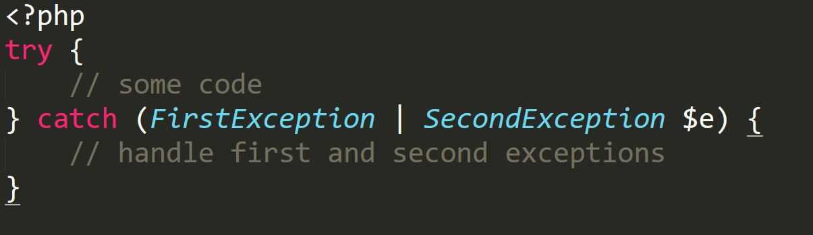
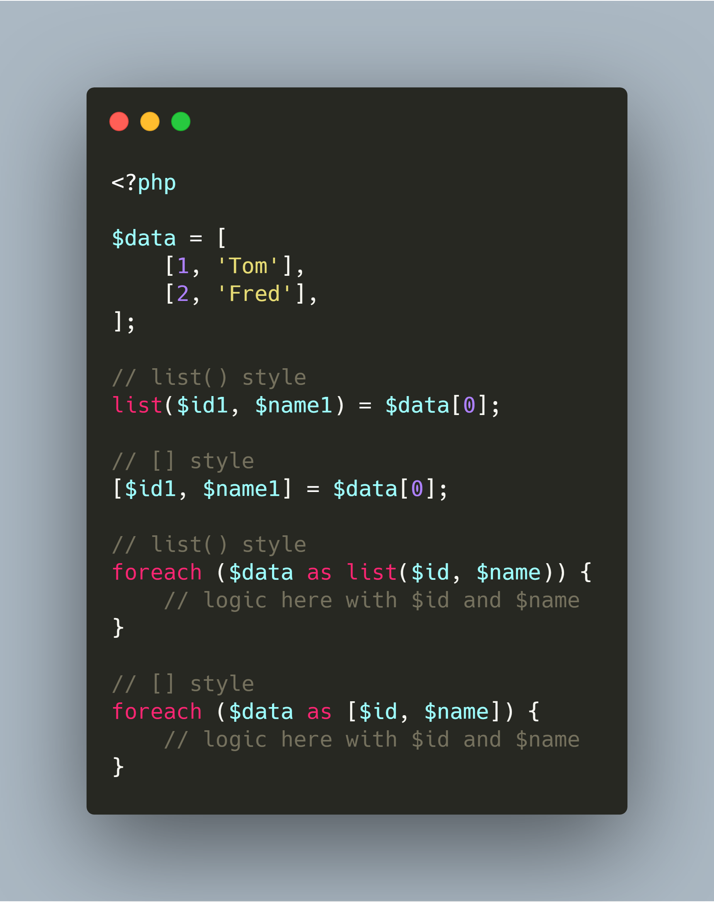

Token guard token hashing
supports storing tokens as SHA-256 hashes
## Cache TTL ```php // Laravel 5.7 - Store item for 5 minutes... Cache::put('foo', 'bar', 10); // Laravel 5.8 - Store item for 5 seconds... Cache::put('foo', 'bar', 10); ```
Artisan serve improvements
Mock testing helper methods
Laravel News
### April - April 18: [Guzzler Testing Library](https://laravel-news.com/guzzler-testing-library) - April 23: [Laraberg](https://laravel-news.com/laraberg-editor) - April 24: [Job-based Retry delay](https://laravel-news.com/job-based-retry-delay)
### May - May 03: [Laravel mix alias](https://laravel-news.com/laravel-mix-alias) - May 10: [Short Arrow functions coming to PHP](https://laravel-news.com/short-arrow-functions) - May 15: [Laravel Tappable Trait](https://laravel-news.com/laravel-5-8-17-tappable-trait)
### June - June 03: [Laravel SNS (Amazon Simple Notification Service) Events package](https://laravel-news.com/laravel-sns-events-package) - June 05: [Array Collapse Performance Improvement in Laravel 5.8.20](https://laravel-news.com/laravel-5-8-20) - June 10: [LaraHead SEO Package](https://laravel-news.com/lara-head-seo-package) - June 24: [Laravel Eloquent UUID](https://laravel-news.com/eloquent-uuid)
PHP News
JSON_THROW_ON_ERROR
Argon2
Evolution of bcrypt and scrypt algo
PHP 7.3: Trailing Commas in Function Calls
PHP Void type and Nullable Types
PHP Multi catch exception handling

### PHP Symmetric array destructuring: - `[]` instead of `list()`
